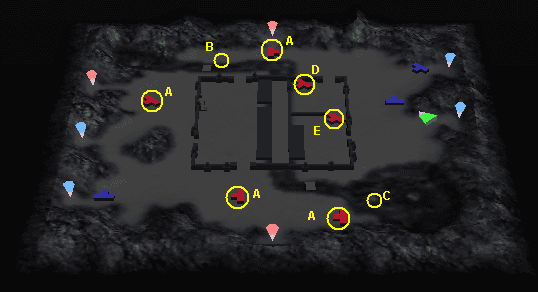

|  1.一番近くにいるＡの武将を倒す。 2.張遼が出現するので、そちらへいって彼を倒す。(途中でＡの武将を見つけても無視してよい。) 3.Ａの武将を倒して回る。 4.Ｂ付近の門が開き、馬車と呂布が出てくる。(呂布は無視する。) 5.馬車はＢの左側の拠点へ向かうので、倒せるのならば倒す。 6.馬車が拠点の中へ入った場合、袁術軍が出現するので、倒す。 7.軍師がＢ地点の岩を落とすように指示するので、B地点へ行く。(岩で川をせき止める。) 8.しばらくすると赤兎馬を見つけたという報告があるので、Ｃ地点へ行き馬に乗る。 9.城の中へ入り、Ｄの武将に近寄る。(Ｄの武将が投降する。) 10.Ｄの武将が投降すると、呂布が退却する。 注1 Ｅの武将(貂蝉)は絶対に倒さないこと。 |